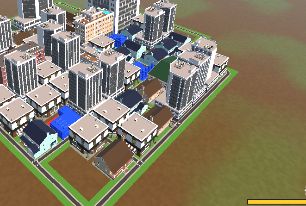

Tracefolio REPORTS & ISSUES
Tracefolio REPORTS & ISSUES초기 도시·분산4칸 성장·유한 지도·후반 고레벨 건설
검증 대기시작96칸을미리채우고중심거리순대신여러가장자리에서4칸씩성장하며24×24영역안에서후반고레벨신축/재건이이어지도록변경했습니다.
작업 결과
구현·독립233개/언어699개·참조컴파일·씬/원본검사완료. 실제Play미검증.
변경 내용
적용 내용
시작시96칸을동기적으로채웁니다. 기본시드/현재조합규칙의독립시뮬레이션결과82개건물·14회진화이며특수건물도포함됩니다. 초기건물은생성애니메이션대신완성상태로두고카메라를초기전체도시에맞춥니다. 초기건설은골드/파괴점수를주지않습니다.
성장주기마다최대4칸을생성합니다. 신규확장은중심거리정렬을사용하지않고연결된frontier에서인접밀도와동일배치간분산가중치로선택합니다. 붙어있는도시/자연스러운도로연결을유지하면서여러가장자리에서성장합니다. 조합에따라실제건물객체증가수는4보다작을수있습니다.
기본최대영역은24×24칸=576점유칸입니다. 셀16기준약384×384Unity단위입니다. 좌표-1211을허용하고외부건설을거부합니다. 성능측정으로확정한값이아닌초기플레이용한계입니다. 꽉차면신축확장은멈추고파괴한구역의지연재건은계속됩니다. 기존선택적더작은점유상한도지킵니다.
후반고레벨직접생성을추가했습니다. 게임90300초에비중이증가하고300초부터일반신축/재건의추첨은3레벨75%·2레벨20%·기본5%입니다. 특수건물규칙은별도유지합니다. 기존조합진화·시간성장가속·핵100초·기체귀환50%는유지하며NEW CITY는시간/도시를초기화합니다.
96/24/4설정은씬과Inspector에저장했고9언어시작메시지·문서/README를갱신했습니다.
검증
독립233개시나리오통과(신규24개포함). 초기96점유/82건물/보상0/동일시드동일도시,4칸배치·중복없음·가장자리분산·연결성,지도경계/외부거부·장기576칸고정·가득찬지도파괴/지연재건/최종576회복·더작은상한,초반기본/후반고레벨실제생성·기존시간가속·전멸후4칸복구를검사했습니다.
언어/핵699assertion·동적522종/native178개글리프누락0·9언어문서와실제Text/순서회귀·씬1193객체참조/14이벤트검사통과. 설치Unity6000.0.83f1 Runtime/Editor참조컴파일통과. 외부원본5840개SHA256변경0건. 초기카메라스냅과완성상태·네이티브씬96/24/4설정도소스로대조했습니다.

남은 사항
실제UnityPlay에서초기카메라/도시모양·4칸동시등장·지도끝·후반고레벨·성능/밸런스·웹플레이·씬재열기·전후캡처는사용자GUI금지로미검증입니다. 576칸은프로파일링전의초기튜닝값입니다.
작업 시간
- 제안 시간: 10~15분
- 실제로 완료된 시간: 시작2026-11-07 04:18:34 KST. 구현/독립검사후중앙보고서배포확인진행. 실제Play미실행.
- XERJ: 미사용 — XERJ 도구 미제공 — rg·현재소스/씬·설치참조·독립모델검사 사용